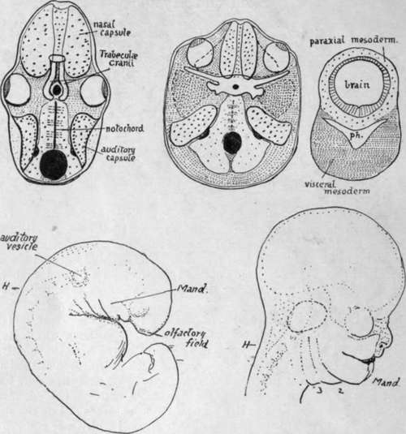

The Development Of The Skull As A Whole
Description
This section is from the book "The Anatomy Of The Human Skeleton", by J. Ernest Frazer. Also available from Amazon: The anatomy of the human skeleton.
The Development Of The Skull As A Whole
The base of the skull is preformed in cartilage which begins to make its appearance in the latter half of the second month : the vault is developed in membrane, as are the * orbital plates of the frontal bone.
Fig. 211.-The first figure represents what might be considered a typical (lower) vertebrate skull-base. The hinder portion is made by bones related with somites beside the notochord, hence is " parachordal," and extends forward to the pituitary foramen. In front of this are the paired " trabecular cranii," enclosing the foramen behind, and connected by an intertrabecula in front. Special sense-capsules make up the rest of the cartilaginous base : of these the nasal capsules extend forward below and in front of the trabecular, only their upper and posterior parts really coming into the floor of the proper cranial cavity : the eye probably had a cartilaginous capsule originally, but this is not found now, only the fibrous sclerotic possibly representing it. The auditory capsules, containing the inner ear, are partly basal, beside the parachordal region, but are mainly in the lateral walls. All these structures are formed in " paraxial " mesoderm, which immediately surrounds the neural tube. In the human skull (second figure) the area of the base is much increased, especially in a lateral direction, as the result of brain growth. The auditory capsules in consequence become definitely basal, placed on each side of the parachordal region (which corresponds with the same region in the lower type, although it is developed dorsal to the notochord) while the parachordal cartilage shows backward extensions meeting behind the foramen magnum. The cartilage surrounding the pituitary foramen may be trabecular, but there is no definite indication of this. In front of this the nasal capsules come into the base, but, as explained in the text, they only get into this position secondarily. The solid cartilaginous septum between them is continuous in formation with the pre-pituitary base, and may possibly be trabecular or intertrabecular. The eyes have moved forward, probably on account of the development of the temporo-sphenoidal region of the brain, and a process of cartilage (spheno-ethmoidal plate) is thrown over each from the nasal capsule, as indicated by the interrupted line. A wide area of paraxial mesoderm is thus left between the eye and the auditory capsule : in this a cartilaginous orbitosphenoid extends out behind the eye, and another shorter process behind this, also continuous with the central basal chondrification, marks the base of the future alisphenoid. The remaining paraxial tissue in this area does not ossify or chondrify, but probably forms the dura mater between the orbitosphenoid and the tentorium. The greater part of the alisphenoid is formed in membrane from (visceral) mesoderm deep to the paraxial plane, and comes up into place secondarily from below ; it is indicated in the figure bv darker stippling. The third figure shows the general relations of the visceral mesoderm, in the floor of the pharynx, to the paraxial mesoderm round the neural tube. Observe that the visceral tissue comes round the pharynx, to form a support for the paraxial. With the widening of the brain a corresponding widening and thickening of the visceral mass takes place in support. The relation between the two layers is onlv present at first behind the pituitary level, but, later, extensions 0 (maxillary processes) from the first visceral arch grow forward to support the eyes and overhanging brain, etc. The lower figures show the formation of the face from the embryonic condition ; H is the hind-brain. Notice how the maxillary process from the mandibular arch (mand.) has grown forward below the eye and is applied to the side of the nasal capsule, which has been formed round the .olfactory field.
In lower vertebrates the basal part of the brain case is divisible into a posterior portion, the parachordal bars, and an anterior part composed of the trabecular cranii (Fig. 211). In the human skull there are no signs of such cartilaginous bars, although there is some indefinite suggestion of the conditions in the precartilaginous state, but the,portion of the base between the foramen magnum and the pituitary fossa can nevertheless be termed the parachordal part, because the notochord runs in relation with it as far as the dorsum sellae. In front of this, however, there are no indications of trabecular structure whatever, and this front part of the base of the skull, moreover, is possibly of a quite different morphological value, so that it should not be called the " trabecular part," but might be termed with more propriety the prechordal part.
The notochord does not lie altogether in the parachordal part of the base (see Fig. 216), but below it, in relation with the roof of the pharynx, for the greater portion of its course here ; but, in spite of this, the basiocciput and bas;sphenoid may be looked on as developing in connection with the mesodermal somites that lie on each side of the notochord. Four pairs of somites are taken up in this way into the skull base : if there are any others cephalad to these they are lost in the condensation round the end of the notochord, and give no separate indication of their existence as distinct structures at any time in development, so far as has been observed at present.
Before chondrification begins the mesenchyme of the base forms a continuous condensation in the future basioccipital and sphenoidal regions, and from the latter extends out somewhat at the sides, while from the former situation the condensation shows a tendency to extend back round the neural tube towards the region of the future post-occipital.
Cartilaginous change first occurs in the basiocciput and basisphenoid, spreading later from this into the mesenchyme of the root of the alisphenoid, orbito-sphenoid, and post-occipital. At the same time another element becomes apparent in the base : this is the periotic capsule, developed as a chondrification round the otocyst, which has come into position beside the parachordal part of the base, behind the alisphenoid. Thus, when the process has gone on for a little time the base would present the various distinct parts shown in the scheme in Fig. 211, where the periotic capsules are seen as separate elements, the small and great wings as small projections from the sphenoidal central mass, and the post-occipital as two cartilaginous sheets spreading round the foramen magnum to meet behind it. A little later these different parts unite and form a mass of cartilage continuous at the sides and in front and behind with the thinner membranous covering of the sides of the brain. The cartilaginous portion or chondro-cranium made in this way includes the basi-, ex-, and post- occipital, the basisphenoid and basal parts of the great wings, the orbitosphenoids, and the petrous temporal. The bones that correspond with these regions therefore ossify in cartilage : the membrane bones in continuity with them include the orbital plates of the frontal, the greater part of the alisphenoids, the squamous temporal, and the occipital bone above the superior curved line. The nasal capsule (cartilaginous) is also present, in front of the sphenoid, but it is possibly not in the same morphological plane as the rest of the base and will be considered separately later.
Continue to:
- prev: Lower Jaw Or Mandible. Part 4
- Table of Contents
- next: The Development Of The Skull As A Whole. Part 2